Overview
To retain a $29 billion Certificate of Deposit (CD) portfolio maturing at the end of 2023, my team designed a marketing intervention encouraging customers to keep their money at Capital One. I translated the web experience to iOS and Android, where it handled roughly 40% of maturity selections. In the end, 81.2% of deposits ($23.5 billion) stayed at Capital One. Along the way, I noticed a lackluster experience for managing CDs in the mobile app, so I designed and tested a customer-centric strategic vision with three goals in mind:
- Reduce unnecessary information
- Increase customer awareness of maturity date and options
- Inspire joy and delight
Problem
A third of a $29 billion portfolio was projected to attrite at maturity.
A Certificate of Deposit is a special savings account: customers deposit funds for a set term, during which they can't touch their money without a fee, and the account accrues interest. Once the CD matures, customers can renew it or close it and withdraw their deposit plus accrued interest.
In early 2023, Capital One launched a limited-time offer for an 11-month CD. With a shorter term and higher rate than competitors, the offer attracted $29 billion in deposits across 478,000 new CD accounts. Business partners projected that $10 billion of that portfolio would attrite upon maturity in Q4 — customers closing their CDs and moving funds to external banks.
To prevent that loss of capital, our team designed a web retention experience, run in tandem with a marketing campaign, to encourage customers to keep their money at Capital One. The entire experience hinges on one interaction: when a CD nears maturity, customers must select a maturity option. There are three paths, but only two outcomes Capital One wants — renew the CD or transfer to an internal account. That single selection moment is where my work, and the work that preceded me, was focused.

Project 1
iOS and Android translation
My team had already designed the web retention experience. When it came time to bring that experience to mobile, no native designs existed yet. I created the iOS and Android versions from scratch, using Capital One's Gravity design system and components to translate the web flow 1:1, and designing creatively wherever Gravity had gaps. For example, I used a full-page modal for the transfer money flow and a bottom sheet for the 360 Performance Savings upsell, and because Gravity had no section cards for the dashboard, I designed them based on the web experience.
The experience consists of a maturity options dashboard, plan selection (renew or transfer), and a choose-account flow (which is where attrition actually happens, the moment a customer selects an external account to transfer to).
Customers were sent email campaigns that directed them to the mobile or web experience depending on the device they were reading the email on. Mobile accounted for roughly 40% of maturity selections made between release (Q3) and Q4. As of April 2, 2024, $28.96 billion had matured, and 81.2% of it — $23.5 billion — was retained (most of it in new or renewed CDs, and the rest in other Capital One accounts).
External attrition came in at 18.8%, roughly $5.4 billion, about half of the $10 billion projected.
Project 2
CD strategic vision
While translating the web intervention, I examined the existing mobile CD experience and found real gaps: the account tile didn't say when a CD matured or what term it was, and it was difficult to distinguish from checking and savings accounts. Tapping into the account didn't help much either — it was unclear how close the CD was to maturity, as the maturity date, term, and even APY were buried in L3, the account details screen two taps from home. I led the strategic vision to address these gaps end to end.
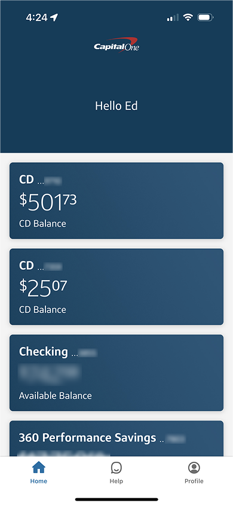
L1 — Home: CD tiles look just like checking and savings, with no maturity date or term.
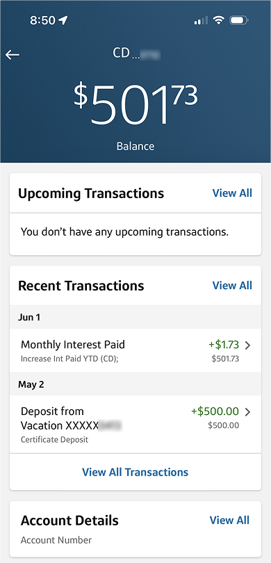
L2 — Account: the same layout as any other account, with nothing about maturity.
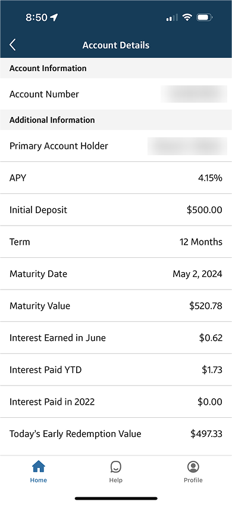
L3 — Account details: the maturity date is buried in a dense list.
Ideation
From sticky notes to a cohesive flow.
In the initial stages, I thought of product improvement from both business and user perspectives.
Business POV
With $10 billion projected to attrite, the maturity selection moment had to steer customers toward keeping their money at Capital One. Desired outcomes: open a 360 Performance Savings account, transfer funds to an internal account, or renew the CD for another term. The outcome to avoid: a transfer to an external bank.
User POV
In the web experience, dense information could lead to cognitive overload, and the maturity date itself wasn't emphasized. In the mobile app, CDs blended in with checking and savings accounts, and the maturity date was buried in L3 account details.
These two points of view became my how-might-we questions:
- To increase the likelihood of the business's desired outcomes, how might we make CD maturity feel like a graduation? Or a breakup?
- How might we educate customers about their maturity options earlier in the CD lifecycle, and increase awareness of both the date and the options available to them?
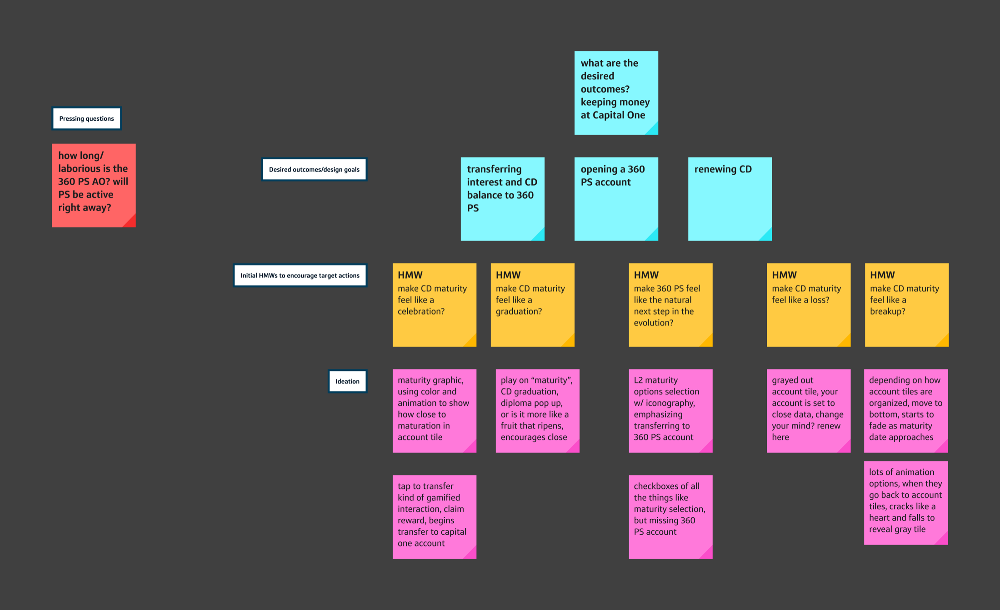
Business POV ideation — mapping each desired outcome to how-might-we questions, then ideas.
I sketched sacrificial concepts on sticky notes and on iPad, presented them to the team for feedback, and used that to narrow in on a single flow built around one goal: making customers feel supported and celebrated as their CD approached maturity, not just informed. I set about accomplishing this goal through restructured information architecture, emphasized maturity planning, and celebratory visuals.
From there, I jumped straight into a high-fidelity first iteration — I wanted to be clear about what I was proposing, not just gesture at it. That first pass explored a progress bar to frame maturity planning as "the next step," elevated maturity options on L2 so they were visible before tapping in, and a custom tab view on L3 that collapsed information until you tapped an option.
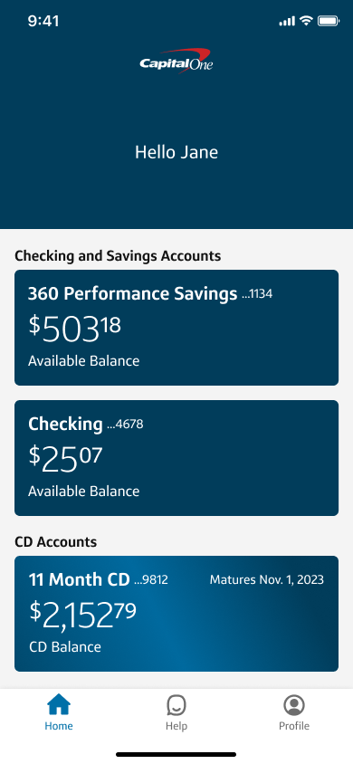
Animation: the CD slides into its own section and elevates the maturity date.
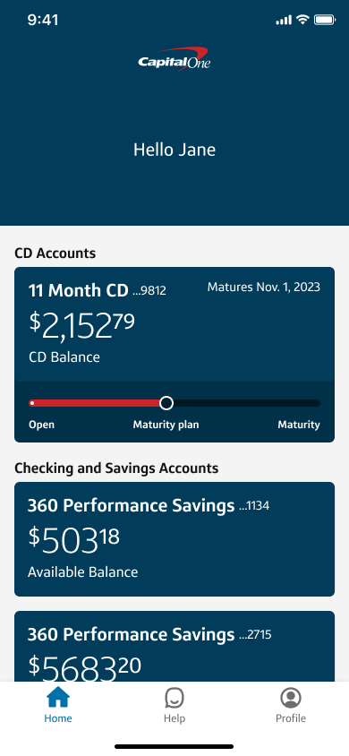
Progress bar: framing maturity planning as the next step.
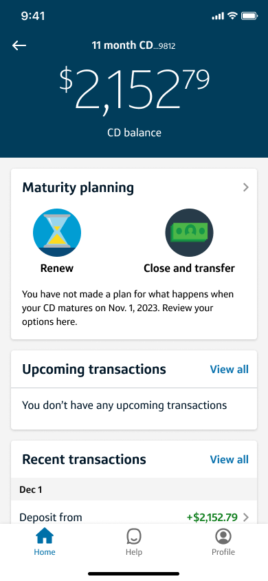
Elevated options: renew or close and transfer, visible on L2.
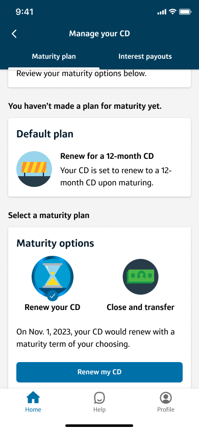
Collapsed info: a tab view on L3 hides detail until an option is tapped.
The feedback sharpened each idea: the progress bar was interesting, but CDs are a long-term product and the bar would barely move over months — and it used red, a color Capital One reserves for error states where users can't proceed. The tab-within-a-tab on L3 hid information behind clicks that didn't need to be hidden, especially since there was already a tab view at the top of that page.
The second iteration responded directly: the maturity date moved to the top, the default plan surfaced immediately below it, and only the necessary information remained — no decorative bar, no buried tabs.
Animation and elevated date: carried over from iteration 1.
Elevated options: kept on L2, with a more direct prompt to make a plan.
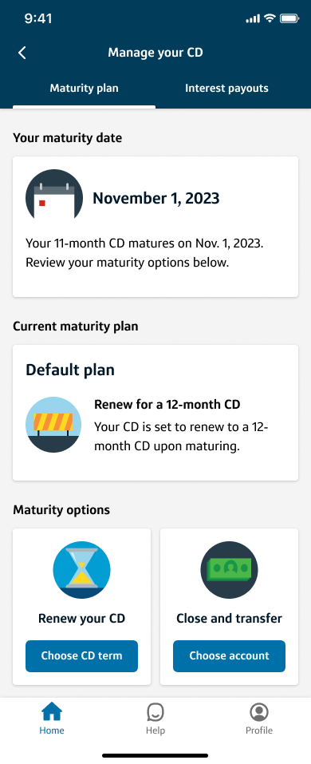
Hierarchy and necessary info: maturity date first, then the currently selected plan (the default), then options — no nested tabs.
Testing
A/B testing two experiences head-to-head.
I ran unmoderated A/B testing with 11 users — 6 on the existing BAU retention experience and 5 on the strategic vision — to answer four questions:
- Do users know when their CD will mature?
- Do users know what will happen when their CD matures?
- Do users have the information they need, and do they know where to look for more?
- How do users feel about the experience?
Synthesizing both rounds surfaced themes, notable quotes, and quantitative outcomes for each version, which I compared directly to see which performed better.
Results
The strategic vision won where it mattered most.
Every user knew when their CD would mature from L1 alone (5/5) — in the BAU condition, all six were unsure until they reached L3.
All users understood their maturity options on L3 (5/5) without needing additional detail — and had no trouble defining what "renew your CD" or "close and transfer" actually meant. The question going into testing was whether I'd stripped out too much information. The answer was no.
Most users appreciated the animations — they emphasized what had changed, "added fun to banking," and made "waiting for [their] money worth it."
L2 surfaced a few rougher edges:
- Unclear default plan: none of the five could tell what happens at maturity from L2, the same as in the BAU condition. I'd elevated the maturity options without making the current plan equally visible.
- Hard-to-find date: some had trouble spotting the maturity date at first glance, since it was embedded in body text.
- Premature planning card: a few didn't want it above account details and recent transactions before they were ready to decide.
Recommendation
A final prototype built on four principles.
- Elevated maturity date — present on L1, L2, and L3. Low lift, high impact.
- Improved information hierarchy — refined on L2 and L3.
- Elevated maturity plan — surfaced on L1 and L2.
- Animation throughout — used on L1, L2, and L3. From a front-end development perspective, no one really wants to build animations. But they added something real to this experience.
The experience follows the CD journey through three stages: the first-time user experience, approaching maturity, and after a maturity plan is selected. Click into each for details.
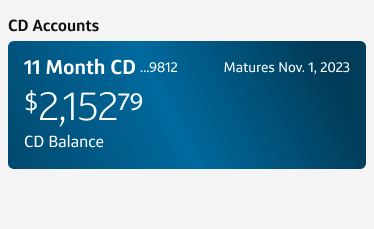
A celebratory CD slide-up animation and a separate, clearly labeled CD section.
View details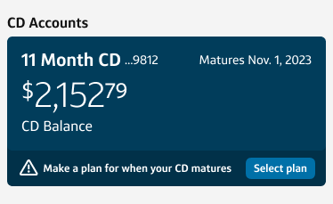
Elevating the maturity date and giving customers a direct entry point to plan selection.
View details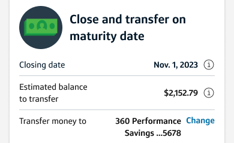
Surfacing the full plan — when, how much, and where — plus a path to reconsider.
View detailsThe vision was handed off as a recommendation for the 2024 roadmap. Two further opportunities remain: research into the mental model of customers most likely to attrite, and continuing to launch limited-time offers and internal products to compete in what is, fundamentally, an "interest rate game."
Takeaways
What this project taught me.
When a product is born from business needs, the onus falls on the designer to build a positive experience for the user and advocate for their perspective. I'd never done visioning work before this — as a designer, you're usually taught to be a facilitator and conduit for user needs, but vision work is a space to be creative and channel that empathy at the same time, rather than treating the two as separate modes.
This project also showed me how much reach consumer design can have. On paper, the translation work was small in scope: bringing an existing web flow to iOS and Android. But that mobile experience was where customers decided what to do with their money: roughly 40% of maturity selections happened there, contributing to the $23.5 billion that stayed at Capital One. Work that looks modest can carry enormous weight when it sits at the moment a customer makes a decision.
Above all, what stuck with me was watching UserTesting recordings and seeing real people interact with a prototype I designed, answering questions I wrote. That direct connection to impact — and to what I could still improve for my users — is very valuable and makes the work fulfilling.